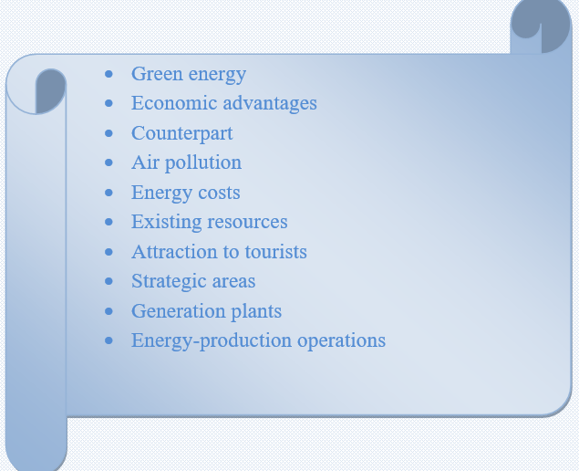

Nowadays pollution is a tremendous problem for people and the earth. Researchers and scientists are trying so hard to try to solve that problem. Clean energy is one of the solutions. Clean energy means the energy that will not affect to the environment.
Clean energy is the energy that can produce by some of the existing resources, like from the wind or the sun. Many organizations try to use these resources to be the main energy for them. Despite the fact that clean energy costs more money than the other energy sources, it can give more benefits to organizations and to the world at large.
Clean energy does not lead to air pollution, and it can therefore, reduce the extent and effects of global warming. Another advantage of clean energy is that it is obtainable from natural sources, and thus the cost of energy-production operations is minimal. The cost of maintaining the plants for production of clean energy is also minimal, and thus the overall cost of producing clean energy is not as high as that associated with the production of their non-renewable counterparts.
Green energy generation is certain areas can potentially bring economic advantages. This is because the generation plants for green energy are normally far from the main cities, and thus they can help in decentralizing economic activities. In some strategic areas, green energy generation can even be an attraction to tourists.
Task1 Vocabulary
Learn the words and make up sentences using them

Task2 Reading
Read the text and find the statements given true or false
• Pollution is a huge problem effecting only to the earth.
• Clean energy does not affect to the environment.
• Clean energy can be produced using the resources such as the sun and the wind.
• Clean energy requires less money than the other resources.
• Clean energy reduces the extent and effects of global warming.
• Generation plants for green energy are located near the main cities.
• Tourists can visit some green energy generation plants.
Task3 Listening
Listen and write the missing words
1. Pedro has got a big ______________________.
2. Has she got a friendly____________________?
3. Her hands are ________________________small.
4. We have not got brown____________________.
5. My legs are __________________________long.
6. He has got short__________________________.
7. I have got tired ______________________after that long walk.
Task3 Writing
Fill the gaps with the appropriate ideas
a) To reduce pollution, one should do_______________________________
________________________________________________________________________________
____________________________________________________.
b) One advantage of clean energy is that_____________________________
________________________________________________________________________________
____________________________________________________.
c) To reduce the extent and effects of global warming, what things should be
done_______________________________________________________
________________________________________________________________________________
____________________________________________________.
d) Researchers are trying to solve the problem of________________________
__________________________________________________________________.
Task 4 Writing
✔️ Learn the given lexical units.
✔️ Work in groups and explain the meanings of the given lexical units.
✔️ Try to use them in sentences.
Read the case and give some solutions